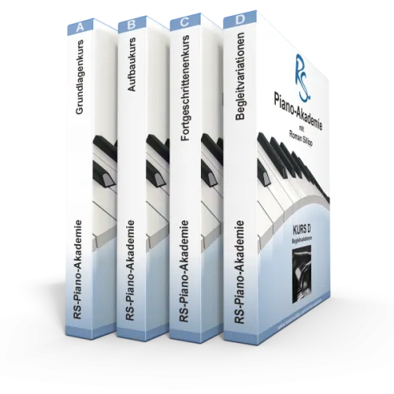
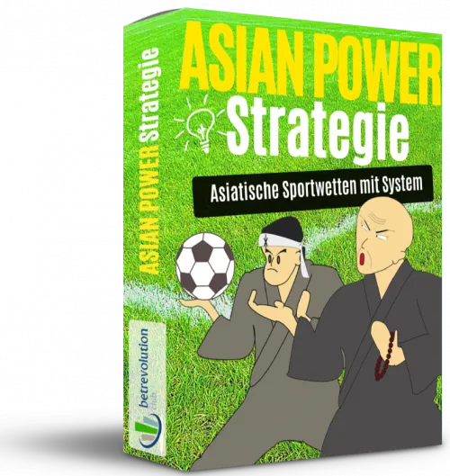
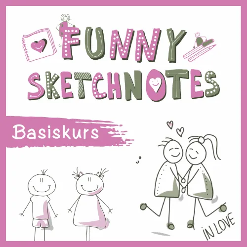
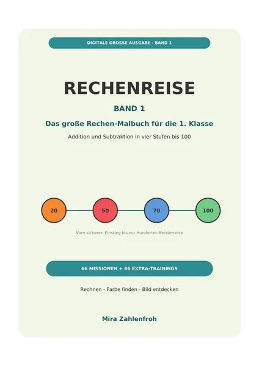

Selbstgeführte Stadtrallye Erlangen | Hint-Caching
Produktprofil · Marktplatz-Daten 2026-10-09 · Verkaufsseiten-Recherche 2026-10-09 · Kategorien: Fun & Games, Travel & Culture
- Selbstgeführte Stadtrallye Erlangen | Hint-Caching ist ein/e Mitgliederbereich & Videokurs in Fun & Games und Travel & Culture, vertrieben über den Digistore24-Marktplatz von Anbieter hintcaching, gelistet seit 2025-01-04.
- Listenpreis $46.06; Digistore24 meldet — Checkout-Konversion, — Stornierungsquote und 20 % Affiliate-Provision.
- Verdienst pro Verkauf (Affiliate): $9.22 (Anbieter-seitige Statistik, keine Prognose).
Interesse an Selbstgeführte Stadtrallye Erlangen | Hint-Caching? Aktueller Preis, Boni und Garantiebedingungen finden Sie auf der offiziellen Seite des Anbieters:
Offizielle Verkaufsseite ansehen
Affiliate-Link (Werbung) — wir verdienen ggf. eine Provision, ohne Mehrkosten für Sie.
Marktplatz-Daten
| Produkttyp | Mitgliederbereich & Videokurs |
|---|---|
| Preis | $46.06 (Single payment) |
| Affiliate-Provision | 20 % |
| Garantie/Rückgabe | Laut Verkaufsseite des Anbieters — vor dem Kauf auf der offiziellen Seite prüfen |
| Anbieter | hintcaching (gelistet seit 2025-01-04) |
| Marktplatz-Statistiken* | Checkout-Konversion — · Stornoquote — · Verdienst/Verkauf $9.22 |
* Anbieter-seitige Statistiken von Digistore24; sie hängen von der Traffic-Qualität ab und sind keine Prognose.
Marktplatz-Beschreibung des Anbieters
Empfehle unsere beliebte Stadtrallye in dieser Stadt und natürlich auch gern in vielen weiteren Städten (siehe weitere Angebote von Hint-Caching auf dem Marktplatz). Bei einer Stadtrallye von Hint-Caching begibt sich der Kunde mit seinen Freunden, der Familie oder den Kollegen auf eine interaktive Abenteuertour durch die Stadt! Das Smartphone wird zum Stadtführer und die Gruppe taucht spielerisch …
Von der Verkaufsseite des Anbieters
Seitentitel: Stadtrallye Erlangen: "Der Coup - Mut zum Risiko"
Meta-Beschreibung: Die VÖLLIG ANDERE Stadtrallye Erlangen: Spannende Story mit Stadtbezug! Rätsel an Sehenswürdigkeiten. Schon ab 2 Spieler. 2-3 Stunden.
Hauptüberschrift
Stadtrallye Erlangen
Abschnitts-Überschriften
- Highlights der Stadtrallye Erlangen
- Stadtrallye Erlangen: 2-3 Stunden Spielspaß in der Altstadt von Erlangen
- Was du unbedingt wissen musst, bevor du eine Stadtrallye buchst:
- Stadtrallye Erlangen buchen
Einstiegstext
Unsere Stadtrallye Erlangen ist ein interessanter Mix aus Schnitzeljagd, Rätseltour, Outdoor Escape Game und Stadtführung. Rätselt euch zusammen durch die Stadt und erlebt dabei eine spannende Geschichte aus der Vergangenheit! Entdeckt die Stadt mit ihren wichtigsten Sehenswürdigkeiten sowie unbekannten Orten auf eine völlig neue Art . So wird euer selbstgeführter Stadtrundgang zu einem kurzweiligen Abenteuer.
Der Preis gilt pro Gruppe mit bis zu 6 Spielern. Bei mehr Spielern einfach entsprechend mehrere Tickets buchen.
Ihr bewegt euch beim Rätseln im Gehtempo im Bereich der Altstadt zwischen Steinbach Bräu, Schlossgarten, Neustädter Kirche und Bahnhof. Die Rallye endet in der Nähe vom Schloss. Hinweise für das Lösen der Rätsel findet ihr an bekannten Sehenswürdigkeiten, Infotafeln usw.
Ihr könnt die Stadtrallye jederzeit starten . Du kannst auch beispielsweise jetzt den Zugang buchen und die Stadtrallye später zu einem bestimmten Zeitpunkt mit deinem Team starten. Das Spiel dauert insgesamt etwa 2-3 Stunden. Es gibt kein zeitliches Limit, aber es ist möglich, die Zeit mittels integrierter Stoppuhr zu messen. Ihr könnt auch zwischendurch eine Pause machen und danach weiterspielen.
Fragen, die die Verkaufsseite beantwortet
- In welchen Städten gibt es die Handy Stadtrallyes?
Recherche-Methode: rohes HTML · 3577 Wörter · Qualität: rich · recherchiert am 2026-10-09. Vollständige Recherche-Datei (MD) ↗
Wie Produkte dieser Art geliefert werden
Allgemeiner Hinweis zu diesem Produkttyp (keine anbieterspezifische Anleitung): Videokurse laufen über einen Mitgliederbereich: nach dem Checkout erhalten Sie Zugangsdaten per E-Mail und können die Lektionen in Ihrem eigenen Tempo streamen. Für die genaue Anwendung von Selbstgeführte Stadtrallye Erlangen | Hint-Caching sind die offizielle Verkaufsseite und die enthaltenen Materialien maßgeblich.
Gut zu wissen
- Keine Garantie-Formulierung in unserer Recherche gefunden — bestätigen Sie das Rückgabefenster auf der offiziellen Seite, bevor Sie kaufen.
Häufige Fragen zu Selbstgeführte Stadtrallye Erlangen | Hint-Caching
Was ist Selbstgeführte Stadtrallye Erlangen | Hint-Caching?
Selbstgeführte Stadtrallye Erlangen | Hint-Caching ist ein Angebot des Typs „Mitgliederbereich & Videokurs" im Digistore24-Marktplatz, Anbieter: hintcaching, gelistet seit 2025-01-04. Eingepflegt unter Fun & Games und Travel & Culture. Digistore24 wickelt Checkout, Lieferung und Rückgaben ab.
Wie viel kostet Selbstgeführte Stadtrallye Erlangen | Hint-Caching?
Der Digistore24-Marktplatz listet es für $46.06 (single payment). Preise legt der Anbieter fest und können sich ändern — die offizielle Verkaufsseite zeigt den aktuellen Preis.
Gibt es eine Geld-zurück-Garantie für Selbstgeführte Stadtrallye Erlangen | Hint-Caching?
Unsere Verkaufsseiten-Recherche hat keine explizite Garantie-Formulierung gefunden. Viele Digistore24-Produkte bieten 60 Tage Geld-zurück, aber das legt jeder Anbieter selbst fest — bestätigen Sie es auf der offiziellen Verkaufsseite, bevor Sie kaufen.
Ist Selbstgeführte Stadtrallye Erlangen | Hint-Caching seriös?
Wir bewerten keine Seriosität — wir veröffentlichen überprüfbare Zahlen: Anbieter hintcaching (gelistet seit 2025-01-04), Checkout-Konversion —, Stornoquote —, Affiliate-Verdienst/Verkauf $9.22 (alles Anbieter-seitige Marktplatz-Statistiken). Lesen Sie unsere Recherche-Standards und entscheiden Sie anhand der Zahlen.
Wo kann ich Selbstgeführte Stadtrallye Erlangen | Hint-Caching sicher kaufen?
Nur über die offizielle Verkaufsseite, die auf dieser Seite verlinkt ist (Checkout und Rückgaben laufen über Digistore24). Prüfen Sie dort Preis und Garantie vor der Bestellung. Der Link ist ein Affiliate-Link — der Kauf unterstützt diese Website ohne Mehrkosten für Sie.
Ähnliche Angebote in Spaß & Spiele

Die RS Piano-Akademie bietet umfassende und interaktive Klavierkurse, die vom Anfänger- bis zum Fortgeschrittenenniveau reichen. Diese Kurse wurden entwickelt,

Verschenke unsere kostenlose Strategie-Anleitung & verdiene 50% wiederkehrende Provisionen ➤ DAS BIETEN WIR - Kostenlose Strategie-Anleitung statt direktem
RAUCHFREI FÜR IMMER Mit Struktur statt Willenskraft Rauchfrei werden – mit Struktur, mentaler Vorbereitung und klaren Schritten. Dieses Programm wurde aus eigen

Entdecke im Sketchnotes-Basiskurs, wie Du von Grund auf das Zeichnen von Sketchnotes erlernst – ideal fürs Lernen, zur Wissensvermittlung oder einfach zum Spaß:
Weitere Angebote von hintcaching
Empfehle unsere beliebte Stadtrallye in dieser Stadt und natürlich auch gern in vielen weiteren Städten (siehe weitere Angebote von Hint-Caching auf dem Marktpl
Empfehle unsere beliebte Stadtrallye in dieser Stadt und natürlich auch gern in vielen weiteren Städten (siehe weitere Angebote von Hint-Caching auf dem Marktpl
Empfehle unsere beliebte Stadtrallye in dieser Stadt und natürlich auch gern in vielen weiteren Städten (siehe weitere Angebote von Hint-Caching auf dem Marktpl
Empfehle unsere beliebte Stadtrallye in dieser Stadt und natürlich auch gern in vielen weiteren Städten (siehe weitere Angebote von Hint-Caching auf dem Marktpl
Gleicher Anbieter auf unserer englischen Website
- Self-guided scavenger hunt Cologne | Hint-Caching — $54.81 (Fun & Games)
- Self-guided scavenger hunt Frankfurt | Hint-Caching — $54.81 (Fun & Games)
- Self-guided scavenger hunt Bamberg | Hint-Caching — $54.81 (Fun & Games)
Gleicher Anbieter, englischsprachige Marktplatz-Listings.
Selbstgeführte Stadtrallye Erlangen | Hint-Caching ist auch gelistet in
Reisen & Kultur (168 Produkte)
Ähnliche Preislage in Spaß & Spiele

Rechenreise Band 1 ist ein digitales, druckbares Rechen-Malbuch für Eltern von Kindern in der 1. Klasse sowie für Vorschulkinder mit ersten Rechenerfahrungen. 1
Ein sorgfältig entwickelter Onlinekurs, der Kinder raus in die Natur begleitet. Mit spannenden Geschichten, echten Frühlingsabenteuern, kreativen Aufgaben und d
Herbst online entdecken und offline erleben (4–6 Jahre) Jetzt Natur entdecken: Die Beta-Version vom Herbstkurs ist da! Begleite dein Kind auf eine magische Reis
Empfehle unsere beliebte Stadtrallye in dieser Stadt und natürlich auch gern in vielen weiteren Städten (siehe weitere Angebote von Hint-Caching auf dem Marktpl
Ähnliche Suchanfragen
Wo Sie es sich ansehen können
Wo Sie es sich ansehen können
Aktuelle Preise, Garantie und Boni finden Sie auf der offiziellen Verkaufsseite:
Offizielle Verkaufsseite ansehen
Das ist ein Affiliate-Link (Werbung) — kaufen Sie darüber, verdienen wir ggf. eine Provision, ohne Mehrkosten für Sie.
Quellen & weiterführende Informationen
- Offizielle Verkaufsseite (aktueller Preis, Garantie, Boni): hint-caching.de/stadtrallye-erlangen/ (Affiliate-Link)
- Öffentliche Digistore24-Produktseite: digistore24.com/product/588747
- Vollständige Recherche-Datei (Markdown, versioniert): content/products/51142-selbstgef-hrte-stadtrallye-erlangen-hint-caching.md
- Affiliate-Supportseite des Anbieters: hint-caching.de/affiliateprogramm/
- Marktplatz-Kategorie: Spaß & Spiele
Wie wir Produkte wie Selbstgeführte Stadtrallye Erlangen | Hint-Caching bewerten
Sechs Prüfungen, ausschließlich mit offiziellen Marktplatz-Zahlen. Die vollständige Bewertungsmethode lesen · unsere Recherche-Standards & Kennzeichnung.
function interactionBlock(p) { const q = encodeURIComponent(p.label); const mail = encodeURIComponent("Korrektur: " + p.label); return `Fragen oder eigene Erfahrungen mit ${esc(p.label)}?
Praxis-Tests veröffentlichen wir erst, nachdem wir ein Produkt selbst gekauft haben — aber Ihre Erfahrung hilft anderen Lesern: Diskussion zu ${esc(p.label)} auf GitHub starten/verfolgen. Falsche Zahl gefunden? Korrektur melden — jede Seite zeigt ihre Datenstände, Korrekturen gelten für die ganze Website.
`; }